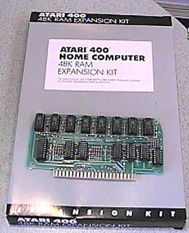

The Atari 400 48K Upgrade Kit

The Atari 400 could have just as much memory as the Atari 800 with this
factory upgrade kit. The upgrade required soldering several
wires to the underside of theAtari 400 motherboard, not too difficult a
job for those who were handy with a soldering iron. Still Atari
did not sell these directly to the public for fear that users would damage
the system board or void the warantee of the computer.